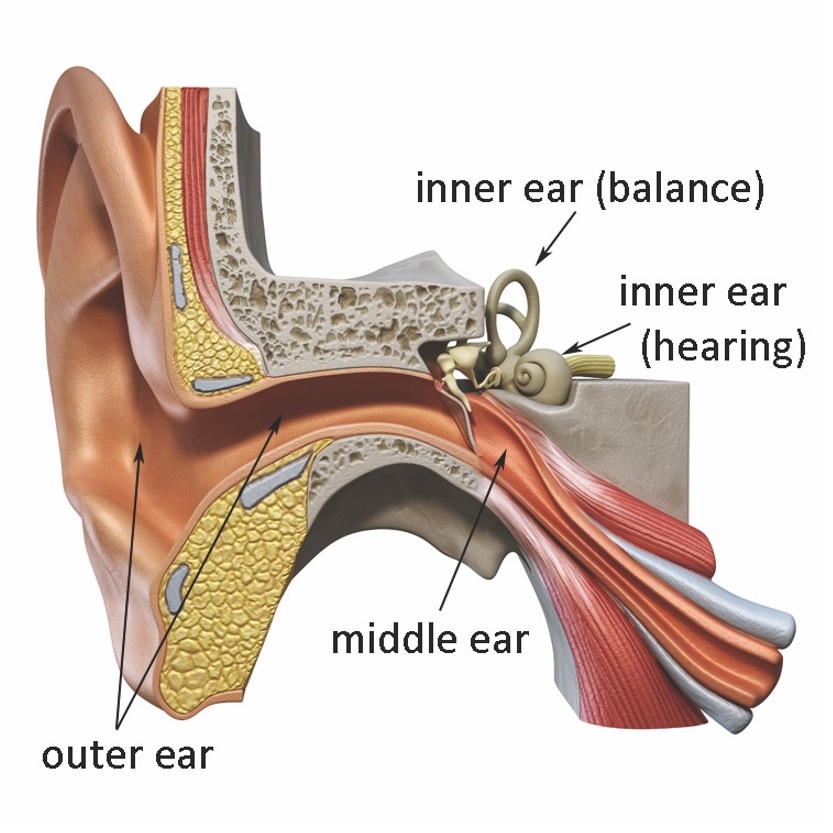
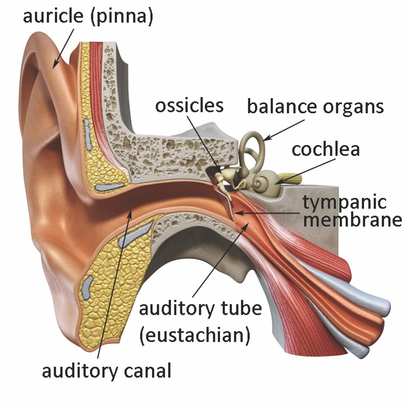
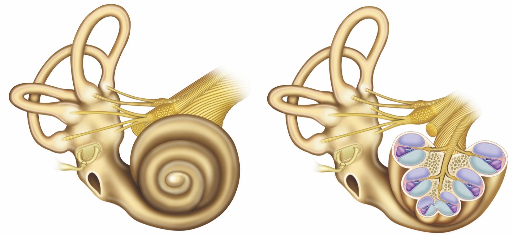
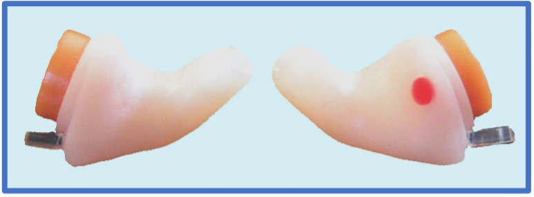

This book began by exploring the sounds of singing and the acoustic principles that govern them. This final chapter comes full circle, showing how these sounds are heard and interpreted by the ear and the brain. What, if any, role does hearing play in singing? There certainly is disagreement among the members of the singing community. Some teachers insist that singers should never listen to themselves; listening is the job of the teacher—the student should only “feel” the sound. Others insist that listening is among the most important elements in proper voice production. How can these seemingly opposite approaches coexist?
Our ears are exquisitely sensitive instruments, capable of detecting changes in air pressure two million times smaller than ambient, barometric pressure. The anatomy that accomplishes this is fascinating. The ear is divided into three main sections: the outer ear, which collects and transmits sound to the middle ear, which mechanically amplifies and transfers sound to the inner ear, which maintains balance and converts sound vibrations to nerve impulses that are sent to the brain (Figure 12-1).

Figure 12-1: Divisions of the ear
The outer ear consists of three parts (Figure 12-2). The external portion, called the pinna or auricle, is constructed of flesh and cartilage and has a complex shape that helps collect and direct sound from the outside world to the middle and inner portions of the ear. The pinna leads to the bony canal, a 25mm long passageway through the bones of the skull. A thin membrane, called the eardrum or tympanic membrane, is stretched across the end of this canal. Soundwaves travel through the bony canal and impact the tympanic membrane, causing it to vibrate.
The middle ear is an air-filled region that contains the three smallest bones in the human body: the malleus (hammer), incus (anvil) and stapes (stirrups). Each of these bones is no larger than a grain of rice. Together, they form the auditory ossicles, which connect the back of the tympanic membrane to the oval window of the inner ear. Acting as a series of levers, the ossicles transfer the vibrations of sound from one structure to the other. Because the oval window is much smaller than the eardrum, the intensity of these vibrations is amplified. This phenomenon can be conceptualized through a pair of interlocking, rotating gears of two different diameters; the smaller gear always will rotate at a higher speed than the larger.

Figure 12-2: Structures of the ear
Two muscles are found within the middle ear: the tensor tympanum, which courses from the malleus to the bony edges of the auditory tube, and the stapedius, which connects the posterior wall of the middle ear to the stapes. With a length of only 6mm, the stapedius is the smallest striated muscle in the human body. Both muscles serve a protective function within the ear. By contracting in response to high amplitude sounds, they inhibit movement of the ossicles and attenuate vibrations passed along to the inner ear. They cannot, however, protect the ear under all circumstances; exposure to loud noise, including loud music, is among the most common causes of hearing damage.
Air pressure must be equal on either side of the eardrum for it to vibrate efficiently. If this pressure is not balanced—as often happens on an airplane during the descending portion of a flight, or while riding an express elevator in a high-rise building—we experience a subtle, temporary loss of hearing that might be accompanied by physical discomfort. Nature has provided the auditory tubes (also known as eustachian tubes), which connect the pharynx to the middle ear, to help keep air pressure equalized. They also serve to drain away any fluid and cellular debris that might build up in the middle ear. Many ear infections, especially in children, result in or are caused by blockage of these tubes.
The inner ear is a fluid-filled region that serves two independent functions: balance and hearing. Our sense of balance (equilibrium) is maintained through the vestibular organs, the utricle, saccule and semi-circular canals. Infection in these organs causes the disorder known as vertigo, in which balance is disrupted and any movement leads to severe dizziness. The hearing organ of the inner ear is the cochlea, which is spiral-shaped and resembles a small snail shell. The outer edge of this spiral consists of the vestibular membrane, which encases the scala vestibuli and the scala tympani (Figure 12-3).

Figure 12-3: Cochlea and vestibular organs
Between these two structures lies the basilar membrane, which is lined with thousands of small, hair-like receptor cells called cilia. Sound that travels to the inner ear sets the basilar membrane in motion, making the cilia wave in the cochlear fluid like stalks of wheat in the wind. A doughnut-shaped protein molecule, known as TRPA1, sits at the tip of each ciliated cell. Interaction between this molecule and the cochlear fluid completes the transformation from mechanical vibration to electro-chemical impulses, which finally are carried via the cochlear (auditory) nerve to the brain to be interpreted as sound (Corey et al, 2004). 12/1 demonstrates movement of the basilar membrane during transmission of soundwaves through the cochlea.
Media 12/1: Movement of the basilar membrance in response to high and low frequency sounds
Singers and voice teachers often underestimate the role of hearing in voice production. To make vocal sound, the brain must transform thought into physical action by sending signals through the central nervous system to the muscles responsible for breathing, phonation and articulation. The ears and brain monitor the resulting sounds to check for accuracy. Any deviations from the desired output are quickly and subconsciously corrected. This phenomenon is called the auditory feedback loop.
Imagine a simple conversation: someone has just asked for your name. What are the steps required to formulate a response? First, the sounds produced by the questioner must travel through space to your ear where they are converted from vibrations to nerve impulses. These nerve signals are sent to the auditory area in the left side of the brain for initial processing before being transferred to the sensory speech area for interpretation as language. Your response is formulated in the brain’s motor speech area. The motor cortex now takes over, sending signals to the muscles of breath and speech. The ear then takes over, monitoring and correcting the accuracy of your intended response.
In the example above, the brain is responding to sounds that have been heard physically; but it also can respond to sounds that are imagined. If we imagine a major scale, the ear and brain direct the vocal folds to elongate as if we actually were singing. We imagine a bright, a nasal or a dark sound and automatically produce the appropriate timbre. This happens not just because the brain tells the body what to do, but also because the ear is present to verify the results. It is the ear that allows us to sing in tune and to vary loudness and timbre. Singers who say they do not listen to themselves but only “feel” the sound are not being completely honest. While it is possible to concentrate on the sensations rather than the sounds of singing, it is physiologically impossible to turn off the aural feedback loop; the ear constantly monitors and adjusts everything that is said or sung.
Two types of sound transmission are responsible for people hearing their own voices. The first is propagation of sound through the medium of air. As we learned in Chapter 2, high frequency sounds travel more directionally than low frequency sounds. Because of this phenomenon, singers do not hear the true strength of their “ring” (singer’s formant), especially in poor acoustic environments. To compensate, some singers and speakers cup a hand in front of their mouths to reflect sound back toward the ear. This immediately increases the self-perception of brightness; however, it also increases the risk of damage to the ears from exposure to high amplitude sound.
Singers also hear their voices from sound transmitted directly through the body from the larynx to the inner ear; this is the dominant way most people hear themselves. Do you remember the first time you heard your own voice on a recording? You probably did not want to believe it was you; for the first time in your life, you heard yourself as others hear you—that is, solely through airborne sound transmission. The study of singing is greatly complicated by the fact that singers do not hear themselves as others do. Therefore, one of the primary jobs of singing teachers is to help students reconcile their internal and external voices. I have often wished I could climb inside a student’s head to hear the same voice he hears!
Many singers complain of not being able to hear themselves when singing in large ensembles or in noisy environments. Commercial musicians deal with this issue through monitor speakers placed on the stage or by wearing special hi-tech, miniaturized monitors that fit within the ear canal. Monitors, unfortunately, are impractical, if not impossible to accommodate in most classical genres and venues. As a result, many singers, especially those whose technique is still under development, over-sing in the face of aural competition (such as the young soprano singing the repeated A5 in Beethoven’s Ninth Symphony). Some try to deal with this through the previously mentioned technique of using a hand to reflect sound from the mouth to the ear. A better method is to wear one earplug or to temporarily block an ear with a finger, which focuses listening on internal sound and enables her to hear herself without pushing. Because one ear remains open, she still can hear all the music that surrounds her.
Internal hearing also can be used to help a singer find his optimum head and neck alignment. Try this experiment. Plug both your ears with your fingers or ear plugs, and then hum a sustained pitch in a comfortable range. Gently rotate your head up and down, forward and back, which will cause the timbre and amplitude of the hum to subtly change. Stop this movement at the spot where the hum is loudest and freest feeling. This probably is your point of optimal alignment.
Hearing loss is a serious issue for all people but is particularly significant for musicians and professional voice users. Even a mild impairment can have dire consequences. If the aural feedback loop is disrupted, the brain has no way to accurately monitor sounds that are produced. The result is reduced ability to control intonation, amplitude, and timbre, and to project clear diction. Two types of hearing loss may occur: conductive and sensorineural.
Conductive hearing loss is caused by mechanical problems in the outer or middle ear that prevent efficient sound transfer to the inner ear. This could be the result of something as simple as excess earwax, but might also result from a middle ear infection or arthritis in the auditory ossicles. The prognosis for persons suffering from this type of hearing loss is usually excellent; normal or near-normal hearing often can be restored through the amplification provided by hearing aids, corrective surgery, or ear cleaning.
Sensorineural hearing loss is more pernicious and can be very difficult to treat successfully. It is caused by problems in the cochlea, auditory nerve or brain, and often is the result of prolonged exposure to high sound pressure levels, including loud music—regardless of the genre. High amplitude sound (over 90dB) damages the ciliated cells of the basilar membrane like carpet fibers that are crushed by heavy furniture. If this occurs, the cochlea no longer can convert sound to nerve impulses and hearing is lost. Risk of hearing loss from noise exposure is so significant that the United States Occupational Safety and Health Administration (OSHA) has established workplace guidelines. Table 12-1 details the maximum exposure by amplitude, beyond which hearing protection is required.
|
OSHA Regulations |
|
|
Duration of Exposure |
Average Amplitude |
|
8 hours |
90 dB |
|
6 hours |
92 dB |
|
4 hours |
95 dB |
|
3 hours |
97 dB |
|
2 hours |
100 dB |
|
1.5 hours |
102 dB |
|
1 hour |
105 dB |
|
.5 hour |
110 dB |
|
.25 hour or less |
115 dB |
Table 12-1. OSHA Noise Exposure Guidelines, regulation 1910.95(b)(2)
As shown by this table, safe noise exposure times decrease rapidly as amplitude increases. In Chapter 2, the amplitudes of many sounds that surround us in everyday life were presented. What about musical instruments? Table 12-2 provides the typical amplitude ranges of several orchestral instruments.
|
Sound levels of Instruments |
|
|
Violin |
84-103 dB |
|
Cello |
84-92 dB |
|
Piccolo |
95-112 dB |
|
Flute |
85-111 dB |
|
Clarinet |
92-103 dB |
|
French Horn |
90-106 dB |
|
Oboe |
80-94 dB |
|
Trombone |
85-114 dB |
Table 12-2: Amplitude of Various Instruments (Based on Sataloff)
All of these instruments are capable of producing sound pressure levels high enough to cause hearing damage with prolonged exposure; indeed, the trombone is capable of playing loudly enough for OSHA to expect hearing protection after only 15 minutes! Most professional orchestras acknowledge this problem and provide players with soft ear plugs on request. Other orchestral musicians purchase special “musician’s earplugs” that are available from audiologists. These earplugs are custom fit to the wearer’s ears and uniformly attenuate all frequencies. The result is a transparent, natural sound that interferes very little with music making (Figure 12-4).

Figure 12-5: Musician's ear plugs
How do singers fare in the decibel war? Mature operatic voices easily can produce sound levels of 110-115dB when measured at a distance of one meter! Remember, however, that amplitude varies according to the square of the change in distance. When the Rodolfo sings his high B-flat while holding Mimi in his arms, she momentarily may be subjected to 120dB or more. No wonder her ears ring when the duet is finished.
Noise exposure also is an issue for voice teachers, especially those who work with larger voices in smaller studios. If you experience ringing of the ears (tinnitus) at the end of the teaching day, you might be exposing yourself to too much loud sound. If you are concerned about your hearing and your risk of impairment, use a sound level meter to verify your exposure. You also should speak with an audiologist or otologist about the issue and consider using musician’s earplugs while you teach.
The final category of musicians at high risk from excess noise exposure includes all members of the “earbud” and “headphone” generation. Those headphone speakers are only about 25mm away from the eardrum and easily can produce damaging sound pressure levels. Many younger people have lived their entire lives listening to music privately through headphones connected to a digital music player. Only time will tell how much damage has been done. A good rule of thumb is never to play music through headphones so loudly that conversation is difficult.
___________________________
Review Questions
__________________________